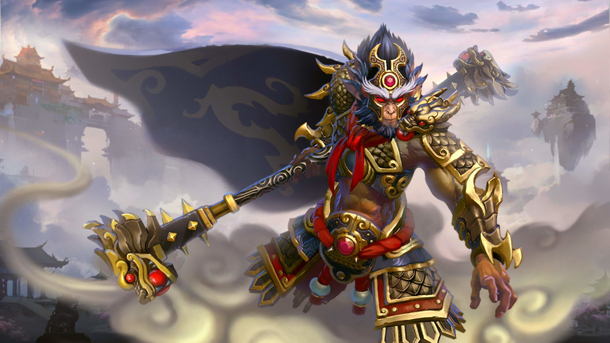

While many Dota 2 players only get to play one or two games a day, a notable bunch of the game’s population can be considered serial-queuers, meaning they queue up for another match right after they’re done with the previous one. The most competitive Dota 2 players will naturally want to squeeze in as many games as possible before calling it a day, but their plans could quickly be ruined if servers go down.
Dota 2 uses Valve’s dedicated servers, and the game can suffer a server problem due to a Steam-related issue. If any of Valve’s services go down, so can Dota 2, and players can receive the infamous “Dota 2 Game Coordinator is down” error in the process.
The game coordinator issues can also be Dota 2 related, meaning other Valve servers can still be up and running while Dota2 servers are down. Connectivity issues on your end may also cause these problems.
Knowing how to check Dota 2’s server status is essential since it can save you from going through a bunch of troubleshooting methods. If the servers are officially down, there’s nothing to do but wait for servers to get fixed.
Check the server status of all Steam services
Developed by xPaw, steamstat.us is an excellent tool that monitors everything in Steam’s database. From game servers to game coordinators, steamstat.us is the complete package for detecting whether the servers are down.
Once you’re on the main page, there are two sections you’ll want to keep your eyes on: the Dota 2 Game Coordinator and Steam Community. When the first one is down, you won’t be able to queue up for a match. Whenever Steam Community goes down, however, almost all Steam services will be affected, and you may not even be able to chat with your friends, let alone playing Dota 2.
What can you do if the servers are up but still can’t play Dota 2?

If the servers are up, but you’re still unable to queue up for a Dota 2 match or log into the game, then there may be a connection issue on your end. Before proceeding with any troubleshooting methods, you should check whether there are any pending updates for Dota 2 and Steam. While you’re at it, try verifying the integrity of your game files to ensure they are in top shape. Though it rarely happens, a corrupt game file can also cause connectivity issues.
← GO TO ARTICLE LIST